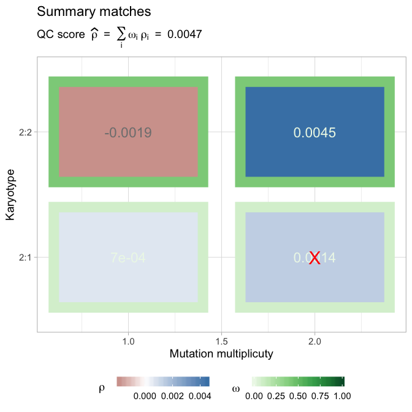

QC analysis via peaks detection
peaks_detection.Rmdlibrary(CNAqc)
require(tidyverse)
#> Loading required package: tidyverse
#> ── Attaching packages ─────────────────────────────────────────────────────────────────────────────────────────────────── tidyverse 1.2.1 ──
#> ✔ ggplot2 3.2.1 ✔ purrr 0.3.2
#> ✔ tibble 2.1.3 ✔ dplyr 0.8.3
#> ✔ tidyr 0.8.3 ✔ stringr 1.4.0
#> ✔ readr 1.3.1 ✔ forcats 0.4.0
#> ── Conflicts ────────────────────────────────────────────────────────────────────────────────────────────────────── tidyverse_conflicts() ──
#> ✖ dplyr::filter() masks stats::filter()
#> ✖ dplyr::lag() masks stats::lag()We work with creating the same object shown in the introductory vignette.
Load a template dataset available within the CNAqc package.
data('example_dataset_CNAqc', package = 'CNAqc')
x = CNAqc::init(example_dataset_CNAqc$snvs, example_dataset_CNAqc$cna,example_dataset_CNAqc$purity)
#> Warning in enforce_numeric(x$from): [CNAqc] Enforcing numeric for values:
#> 1027104, 2248588, 2461999, 2727935, 2763397, 2768208, ...
#> [CNAqc] Missing CCF column from CNA calls, adding CCF = 1 assuming all calls to be clonal.
#> Warning in enforce_numeric(x$Major): [CNAqc] Enforcing numeric for values:
#> 3, 3, 3, NA, NA, 3, ...
#> Warning in enforce_numeric(x$Major): NAs introduced by coercion
#> Warning in enforce_numeric(x$minor): [CNAqc] Enforcing numeric for values:
#> 2, 2, 2, NA, NA, 2, ...
#> Warning in enforce_numeric(x$minor): NAs introduced by coercionPeak detection routines can be used to determine the QC of the CNA calls. A summary table is available after the computation, and is stored inside the named list peaks_analysis.
x = CNAqc::analyze_peaks(x)
#> [ QC analysis with peaks detection ]
#>
#> CNAqc n = 13141 mutations for 482 CNA segments (267 clonal, 0 subclonal)
#> Purity 89 cellularity
#> Karyotypes 7478 (2:2); 1893 (4:2); 1625 (3:2); 1563 (2:1); 312 (3:0); 81 (2:0); 67 (NA:NA); 16 (NA:2); 4 (104:NA); 4 (16:2); 2 (25:2); 2 (3:1); 1 (106:1); 1 (26:2); 1 (99:1)
#>
#> Peaks QC FALSE
#>
#> =-=-=-=-=-=-=-=-=-=-=-=-=-=-=-=-=-=-=-=-=-=-=-=-=-=-=-=-=-=-=-=-=-=-=-=-=-=-=-=-=-
#> Analysing ~ karyotypes 1:0, 1:1, 2:1, 2:0, 2:2 ~ 9041 mutations ~ min. k = 657
#> =-=-=-=-=-=-=-=-=-=-=-=-=-=-=-=-=-=-=-=-=-=-=-=-=-=-=-=-=-=-=-=-=-=-=-=-=-=-=-=-=-
#> # A tibble: 3 x 5
#> karyotype n n_proportion QC norm_prop
#> <chr> <int> <dbl> <lgl> <dbl>
#> 1 2:2 7478 0.569 TRUE 0.827
#> 2 2:1 1563 0.119 TRUE 0.173
#> 3 2:0 81 0.00616 FALSE NA
#>
#> Peak detector p = 0.89 ~ KDE a = 1 c = 0.5 ~ peakPick n = 1 epsilon = 0.015
#> Loading required package: peakPick
#>
#> =-=-=-=-=-=-=-=-
#> Results table
#> =-=-=-=-=-=-=-=-
#> # A tibble: 4 x 10
#> mutation_multip… karyotype peak x y discarded offset matched
#> <dbl> <chr> <dbl> <dbl> <dbl> <lgl> <dbl> <lgl>
#> 1 2 2:1 0.616 0.6 2.94 FALSE 0.0159 FALSE
#> 2 1 2:1 0.308 0.3 3.6 FALSE 0.00796 TRUE
#> 3 2 2:2 0.471 0.46 8.14 FALSE 0.0109 TRUE
#> 4 1 2:2 0.235 0.24 0.86 FALSE -0.00455 TRUE
#> # … with 2 more variables: weight <dbl>, score <dbl>
#>
#> Fit score: 0.00468956233367035
#>
print(x)
#> CNAqc n = 13141 mutations for 482 CNA segments (267 clonal, 0 subclonal)
#> Purity 89 cellularity
#> Karyotypes 7478 (2:2); 1893 (4:2); 1625 (3:2); 1563 (2:1); 312 (3:0); 81 (2:0); 67 (NA:NA); 16 (NA:2); 4 (104:NA); 4 (16:2); 2 (25:2); 2 (3:1); 1 (106:1); 1 (26:2); 1 (99:1)
#>
#> Peaks QC TRUE ~ s = 0.00468956233367035
#> # A tibble: 4 x 10
#> mutation_multip… karyotype peak x y discarded offset matched
#> <dbl> <chr> <dbl> <dbl> <dbl> <lgl> <dbl> <lgl>
#> 1 2 2:1 0.616 0.6 2.94 FALSE 0.0159 FALSE
#> 2 1 2:1 0.308 0.3 3.6 FALSE 0.00796 TRUE
#> 3 2 2:2 0.471 0.46 8.14 FALSE 0.0109 TRUE
#> 4 1 2:2 0.235 0.24 0.86 FALSE -0.00455 TRUE
#> # … with 2 more variables: weight <dbl>, score <dbl>You can visually summarise the result of the QC analysis, which reports the peaks are matched to data.

For every karyptype that you have tested, a plot is available for its peak detection’s analysis, which shows the estimated KDE and the matched peaks.
plot_peaks_analysis(x)
#> Warning: Removed 2 rows containing missing values (geom_bar).
#> Warning: Removed 32 rows containing missing values (geom_path).
#> Warning: Removed 2 rows containing missing values (geom_bar).
#> Warning: Removed 13 rows containing missing values (geom_path).
You can integrate plots
cowplot::plot_grid(
plot_peaks_analysis(x),
plot_segments(x) + ylim(0, 6),
rel_heights = c(.8, 1),
nrow = 2
)
#> Warning: Removed 2 rows containing missing values (geom_bar).
#> Warning: Removed 32 rows containing missing values (geom_path).
#> Warning: Removed 2 rows containing missing values (geom_bar).
#> Warning: Removed 13 rows containing missing values (geom_path).
#> Warning: Removed 24 rows containing missing values (geom_label).
#> Warning: Removed 10 rows containing missing values (geom_segment).
#> Warning: Removed 21 rows containing missing values (geom_segment).